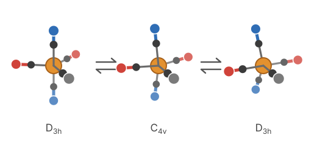
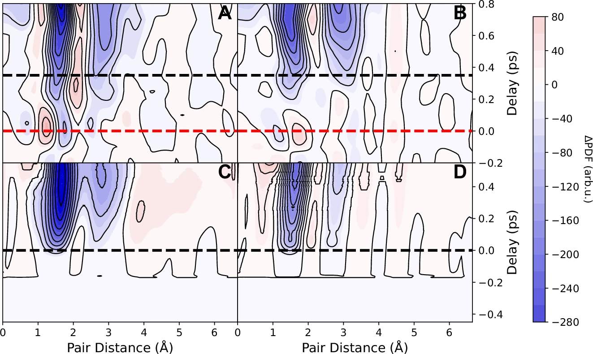
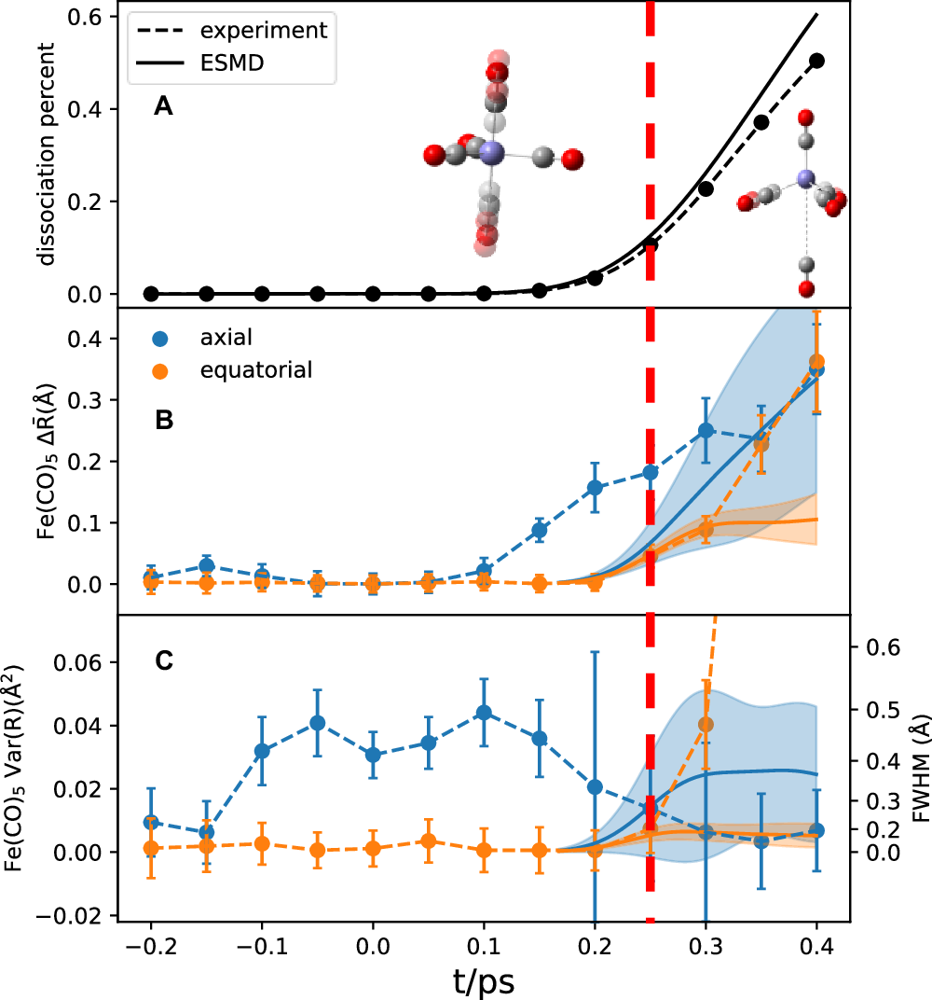
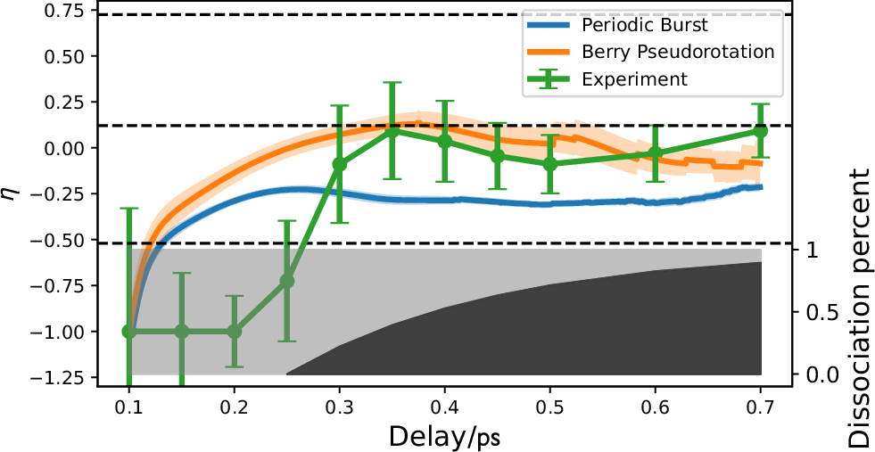

Photodissociation of Fe(CO)5 seen by ultrafast electron diffraction

The question
Fe(CO)5 is a trigonal bipyramid with two axial and three equatorial CO ligands, and a standard model for how metal carbonyls lose ligands after absorbing light. Ultrafast spectroscopy had shown that the excited molecule converts from its metal-to-ligand charge-transfer (MLCT) state to a metal-centered state within about 100 fs, but which CO leaves first was unclear. Spectroscopic work pointed to axial loss, an excited-state molecular dynamics simulation predicted mostly axial loss with a minor channel through Berry pseudorotation, earlier keV electron-diffraction experiments at different excitation wavelengths reported different outcomes, and a more recent X-ray scattering experiment could not resolve the motion before the first CO leaves.
The measurement
At SLAC's MeV-UED facility, Fe(CO)5 vapor was excited at 266 nm and probed with 3.7 MeV electron pulses, with about 150 fs time resolution. Because the pump preferentially excites molecules whose axis lies along its polarization (calculations put the transition dipole along the axial direction), the diffraction signal parallel to the polarization mainly reports motion along the axial direction and the perpendicular signal mainly reports motion in the equatorial plane. This gives an angle-resolved view of the nuclear motion before a CO leaves.

What we found
For about 250 fs after excitation the diffraction shows no sign of CO loss. In that time the axial Fe–C bonds vibrate strongly: their mean length stays the same within 0.03 Å, but the spread of lengths grows to about 0.5 Å (FWHM). The equatorial bonds show no significant change. The CO-loss signal then appears at 266 ± 52 fs, with a first time constant of about 200 fs.

The anisotropy of the lost CO is consistent with a randomly chosen ligand leaving, not preferentially an axial one. We propose that vibrational energy flows from the axial into the equatorial motion before the molecule reaches the conical intersection that leads to dissociation. Through this coupling the molecule undergoes Berry pseudorotation, in which axial and equatorial ligands trade places, so any CO can be the one that leaves.

From these observations we infer a hypothesized shape for the excited-state surface: the stable equatorial bonds can be understood if the MLCT surface is roughly parabolic along both directions, and the delay before dissociation if, along the axial coordinate, the Franck–Condon point lies slightly below the conical intersection.
My part
I led the analysis of the diffraction data, from the images to the angle-resolved pair distribution functions and the genetic-algorithm fits of the Fe–C bond length and its spread, and presented the work as a poster at FEMTO 15 in Berlin (2023).
Other work in the group
I also led an MeV-UED beamtime proposal on the dynamics of a retro-Diels–Alder reaction, and helped build a liquid flat jet that delivers liquid samples into vacuum.
Paper
- H. Ma et al., “Berry pseudorotation enabled photodissociation of Fe(CO)5 observed by ultrafast electron diffraction.” Nature Communications 17, 4910 (2026).